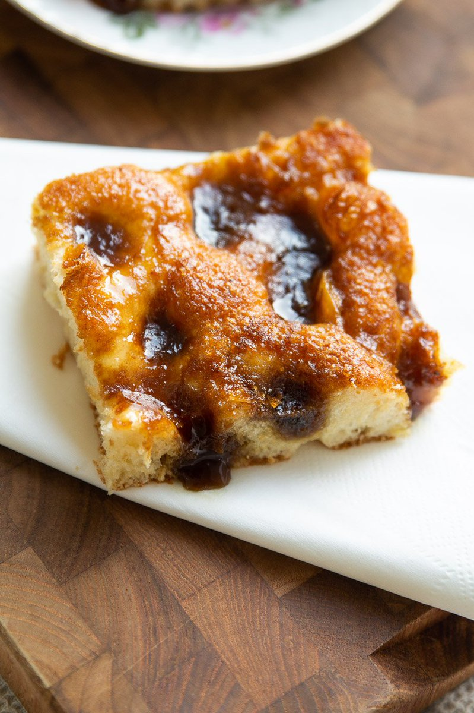

Brunsviger

This is a recipe for the Danish coffee cake called "brunsviger". It comes from the island of Fyn (Funen), where Hans Christian Andersen was born. Danes often eat brunsviger with coffee on Sunday mornings.
The recipe starts with a yested dough similar to the base of cinnamon rolls. Instead of rolling out the dough, you press it into a baking dish. Then, you top it with a mixture of butter and sugar before baking. Enjoy!
DOUGH INGREDIENTS
- 1 cup of whole or soy milk
- 4 1/2 teaspoons of active dry yeast
- 6 tablespoons of butter
- 2 eggs
- t tablespoons of sugar
- 1/4 teaspoon of salt
- 3 1/2 cups of all purpose flour
TOPPING INGREDIENTS
- 3/4 cup of packed dark brown sugar
- 1 cup of butter
DIRECTIONS
- Bloom the yeast in the warm milk in the bowl of a stand mixer fitted with a dough hook.
- Add the sugar, eggs, and butter to the milk and yeast.
- Add in the flour and salt and work the mixer up to medium speed.
- Let the mixer knead the dough for around 6 minutes.
- Let the dough rest for an hour under a damp tea towel.
- Press the dough into a 9 x 13 inch pan.
- Let the dough rise in a warm place for 45 more minutes.
- Meanwhile, melt the butter and sugar for the topping in a pan making sure the sugar fully incorporates into the butter.
- Preheat the oven to 400.
- Once the dough has risen, make dimples all across the surface with your fingertips and pour the topping over.
- Bake for 20 to 25 minutes.
- Let the cake cool and serve either warm or at room temperature.